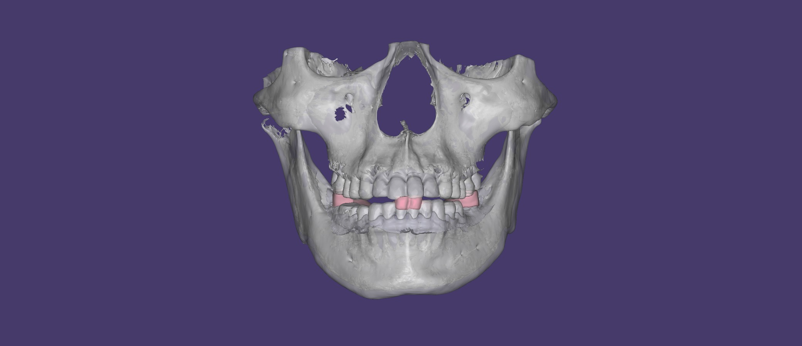

Gewrichtsgeleide mandibulaire positieplanning voor door de arts geselecteerde TMJ-gevoelige restauratieve, orthodontische en volledige mondrehabilitatiegevallen.
AxisGuide is een gefaseerde digitale planningsworkflow die gebruik maakt van MRI-metingen van de hoeveelheid en richting van de schijfverplaatsing, CBCT en intra-orale scans om een voorgestelde mandibulaire positie te simuleren. Vanuit de interarch-ruimte op die positie wordt een 3D-geprinte lokalisator ontworpen, zodat de arts de gewrichtsrespons, de relatie tussen de discus en de condyl en de symptoomrespons kan beoordelen voordat een voorlopige occlusale reconstructie wordt uitgeprobeerd.
Condylaire vectorsimulatieSimulatie van schedel en gebit
Spalken en deprogrammeurs
Apparaat CAD
Voor eenvoudige verzoeken om spalken of functionele hulpmiddelen waarbij de bijtpositie al door de arts is gedefinieerd.
Typische uitvoer
Michigan-spalken, deprogrammeurs, stabilisatiespalken, nachtwachten, bijthellingen en productiebestanden.
AxisGuide
Gezamenlijke positie-eerst planning
Voor complexe gevallen waarbij de mandibulaire positie zelf moet worden geëvalueerd vóór orthodontische of restauratieve reconstructie.
Typische uitvoer
MRI verplaatsingsvectorbeoordeling, mandibulaire bewegingssimulatie, 3D-geprint lokalisatorontwerp, verificatiereferenties, voorlopige occlusale opstelling en orthodontische of restauratieve reconstructiereferenties.
Techniek logica
MRI-gestuurd denken, vertaald in een digitale samenwerkingsworkflow.
De workflow begint niet bij een conventionele bijtrand. MRI-metingen definiëren de schijfverplaatsingsvector, mandibulaire beweging wordt digitaal gesimuleerd en een gedrukte lokalisator draagt die voorgestelde positie over voor door de arts geleide symptomen en MRI-verificatie voordat een voorlopige occlusale reconstructie wordt uitgeprobeerd.
01
Integratie opnemen
MRI, CBCT, intra-orale scans, klinische symptomen, foto's en revalidatiedoelen worden op één lijn gebracht in één planningscontext.
02
MRI vectormeting
De hoeveelheid en richting van de schijfverplaatsing worden gemeten vanuit MRI en vertaald in een planningsvector voor de voorgestelde mandibulaire positie.
03
Mandibulaire bewegingssimulatie
De onderkaak wordt in de voorgestelde positie gesimuleerd, waarbij de interarchruimte, condylaire referenties en occlusale ruimte digitaal worden beoordeeld.
04
Verificatie van lokalisatie
Vanuit die ruimte tussen de bogen wordt een 3D-geprinte lokalisator ontworpen, zodat de arts de relatie tussen de discus en de condyl, de MRI-verificatie en de symptomen kan controleren.
05
Voorlopige occlusale proef
Als de verificatie stabiel is, kunnen voorlopige tanden of een tijdelijke occlusale reconstructie de MIP-contacten, dynamische occlusie, hondengeleiding en anterieure geleiding testen.
06
Orthodontische of restauratieve reconstructie
De geverifieerde positie kan vervolgens als leidraad dienen voor orthodontische occlusale reconstructie, definitieve restauratieve reconstructie of een gecombineerde behandelvolgorde.
Localisator CAD-detail
De geplande ruimte tussen de bogen wordt vertaald in een door de CAD ontworpen positiedrager voor klinische verificatie, en niet in een generieke spalk.

Digitale positieregistratie
De voorgestelde mandibulaire positie wordt gedocumenteerd aan de hand van schedelreferenties, intra-orale scans en condylaire referenties voordat de localisator wordt vervaardigd.
Voorlopige occlusale proef
De voorlopige opstelling kan worden beoordeeld aan de hand van geplande statische MIP-contacten voordat dynamische occlusie, hondengeleiding en anterieure geleiding worden verfijnd.
Best passende gevallen
Volledige mondrevalidatie waarbij de startbeet onbetrouwbaar is
Orthodontisch-restauratieve gevallen waarbij coördinatie van de mandibulaire positie vereist is
Versleten gebit, VDO-verandering, diepe beet, kruisbeet of onstabiele occlusale records
Door de arts geselecteerde TMJ-gevallen met beperkte opening, gewrichtspijn, gewrichtsgeluiden of afwijking bij opening
Gezichtsasymmetrie, mandibulaire afwijking of mandibulaire retrusie vereisen een interdisciplinaire planning
TMJ-gevoelige gevallen waarbij artsen op beeld gebaseerde planningsondersteuning willen
Het plannen van opleveringen
Registreer de checklist en beoordeling van de gereedheid van de zaak
MRI verplaatsingsvectorplanningreferenties
Digitale mandibulaire bewegingssimulatie
Ondersteuning voor 3D-geprinte localizator CAD
Voorlopige occlusale reconstructiereferenties
Orthodontische of restauratieve reconstructie-sequencing-ondersteuning
Klinische grens
Diagnose- en behandelingsbeslissingen blijven bij de arts
Planning en verificatie worden geval per geval beoordeeld met het behandelende team
De relatie tussen de discus en de condylus, de symptomen en de bevindingen op beeldvorming worden klinisch geverifieerd wanneer dit geïndiceerd is
Gedegenereerde gewrichten of niet-reduceerbare schijfaandoeningen vereisen een zorgvuldige selectie van gevallen
Definitieve orthodontische of restauratieve sequencing blijft onder leiding van de arts
Positionering opmerkingAxisGuide is een geavanceerde digitale plannings- en samenwerkingsservice. Het ondersteunt professionele beoordeling en behandelplanning, terwijl de diagnose, therapieselectie en uitkomstevaluatie onder controle van de arts blijven.
AxisGuide-case besprekenDeel geanonimiseerde TMJ MRI, CBCT/DICOM, intra-orale scans, huidige gegevens over de mandibulaire positie en het revalidatiedoel, zodat de reikwijdte kan worden beoordeeld vóór de offerte.